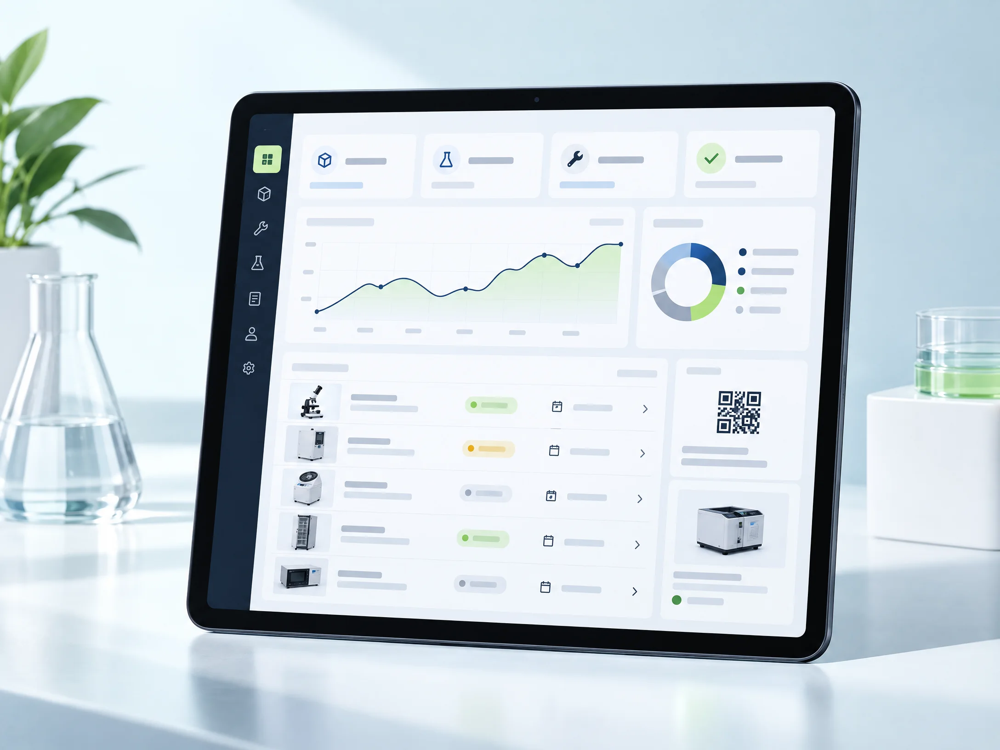
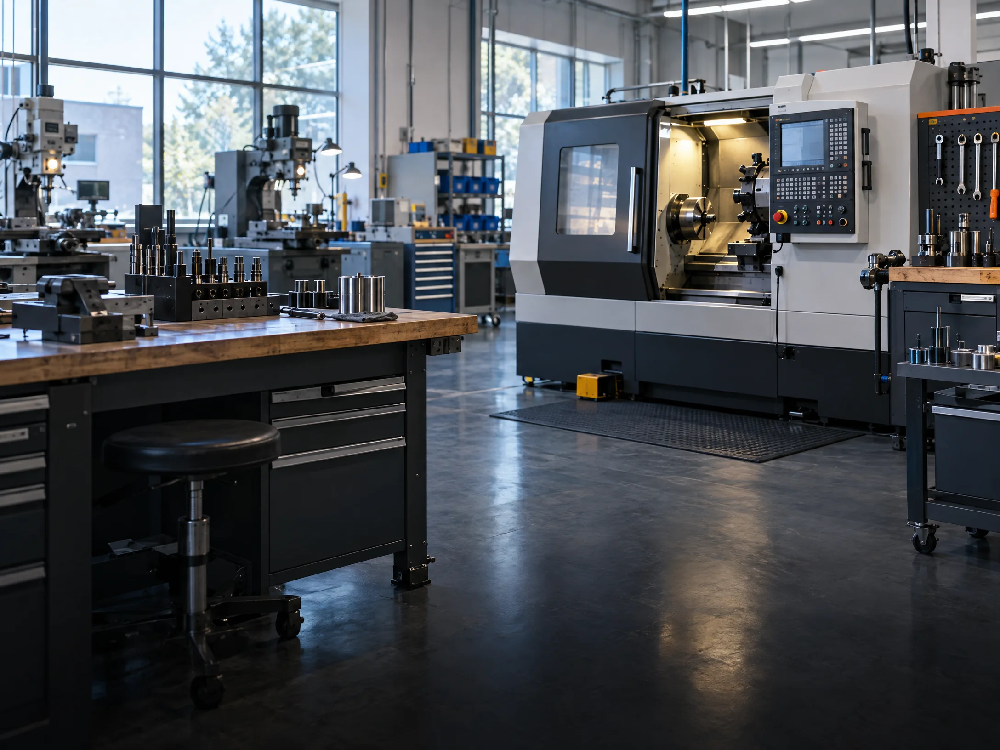

Catálogo de ativos
Consulte equipamentos por laboratório, pesquise o catálogo e mantenha quantidades e especificações registradas.
GESTÃO DE ATIVOS E MANUTENÇÃO
Uma visão unificada dos equipamentos, dos laboratórios e dos chamados da sua instituição.
Do catálogo de ativos ao acompanhamento de cada ocorrência, organize a rotina acadêmica e corporativa em um só lugar.
Catálogo, chamados e laboratórios conectados na mesma experiência.

Gestão integrada de ativos, laboratórios e manutenção.
O QUE O HELP! REÚNE
Recursos que já fazem parte do sistema para organizar equipamentos, espaços e solicitações técnicas.
Consulte equipamentos por laboratório, pesquise o catálogo e mantenha quantidades e especificações registradas.
Abra uma solicitação vinculada ao equipamento e à identificação de série, com descrição e foto opcional.
Associe espaços aos departamentos e mantenha equipamentos organizados pelo ambiente de uso.
Acompanhe o andamento e consulte as mensagens registradas no contexto de cada chamado.
Visualize chamados, acompanhe os status e gere relatórios visuais em imagem PNG.
Gere uma etiqueta QR para identificar rapidamente cada ativo cadastrado no catálogo.
AMBIENTES E EQUIPAMENTOS
Organize o catálogo a partir dos departamentos e laboratórios existentes no Help!.
Estações de trabalho, equipamentos e infraestrutura de rede.

Equipamentos de oficina e ativos associados aos laboratórios.
Espaços e ativos para acompanhar as rotinas de automação.
As áreas apresentadas correspondem aos departamentos e laboratórios presentes nos dados iniciais do projeto.
DA INFORMAÇÃO À AÇÃO
O Help! reúne as informações que ajudam a acompanhar o ciclo de uso e manutenção dos equipamentos cadastrados.
HELP! ENTERPRISE
Entre no portal de demonstração e explore os fluxos de ativos e chamados.
ATUALIZAÇÕES
PORTAL HELP!
Entre com o e-mail e a senha do perfil para acessar o catálogo, os chamados e a visão administrativa.
Dados sincronizados. Perfis, catálogo, chamados e mensagens ficam disponíveis nos dispositivos conectados ao site.
Os perfis servem para demonstrar as telas disponíveis.
Seus dados de demonstração permanecem neste dispositivo.
ESPAÇO DO USUÁRIO
| ID | Evidência | Ativo e identificação | Tipo | Descrição | Status | Ação |
|---|
VISÃO ADMINISTRATIVA
Escolha uma área para acompanhar o banco, os chamados e os relatórios.
MONITORAMENTO AO VIVO
Sincronização automática ativa · última atualização —
ACOMPANHAMENTO
DISTRIBUIÇÃO
CADASTROS
Gerencie os acessos dos professores e confira o laboratório associado.
| Perfil | Função | Laboratório / sala | Ações |
|---|
ESTRUTURA
Consulte e edite nome, departamento e número da sala.
| Laboratório | Departamento | Sala | Ações |
|---|
INVENTÁRIO
Visualize os equipamentos cadastrados e seus códigos organizacionais.
| Código | Item | Laboratório | Qtd. |
|---|
| ID | Evidência | Departamento | Laboratório | Ativo e série | Solicitante | Tipo | Status | Ação |
|---|
| Nº | Item | Laboratório | Solicitante | Status |
|---|
RELATÓRIOS
Consulte ocupação e alocação de professores, ou gere uma imagem do laboratório selecionado.
Selecione um laboratório para gerar um resumo visual dos ativos e chamados.
Uma sala/laboratório é considerado ocupado quando possui ao menos um professor vinculado.
Relação atual de professores e seus locais de trabalho.
| Professor | Departamento | Laboratório | Sala |
|---|
MINHA CONTA
Informações do seu cadastro.
CADASTRO DO PROFESSOR
NOVA SOLICITAÇÃO
Informe o item e descreva a ocorrência.
CATÁLOGO
ADMINISTRAÇÃO
ADMINISTRAÇÃO
Crie o acesso e vincule o professor a um laboratório.
ADMINISTRAÇÃO
Atualize os dados e o laboratório associado.
CONVERSA DO CHAMADO
As mensagens e alterações ficam registradas no banco compartilhado e ficam disponíveis nos dispositivos conectados.
IDENTIFICAÇÃO DO ATIVO
O código contém a identificação do ativo neste protótipo local; ele não aponta para um endereço público.